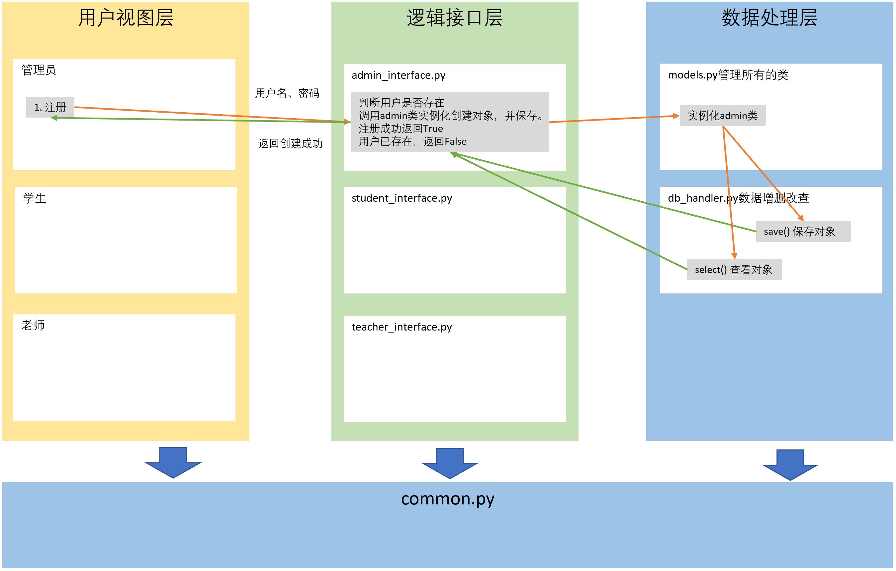

选课系统
任务需求
角色：学校、学员、课程、讲师
要求：
- 创建北京、上海2所学校。
- 创建Linux、Python、go三个课程，Linux和Python在北京开，go在上海开。
- 课程包含周期、价格，通过学校创建课程。
- 通过学校创建班级，班级关联课程、讲师。
- 创建讲师。
- 创建学员时，选择学校，关联班级。
- 创建讲师角色（不需要关联学校）。
- 提供两个角色接口。
- 学员视图：可以注册，交学费，选择班级。
- 讲师视图：讲师可以管理自己的班级，上课时选择班级，查看班级学员列表，修改所管理的学员的成绩。
- 管理视图：创建讲师，创建班级，创建课程。
- 上述操作所产生的数据通过pickle保存到文件。
需求分析
-
管理视图
- 注册
- 登录
- 创建学校
- 创建课程（先选择学校）
- 创建讲师
-
学员视图
- 注册
- 登录功能
- 选择校区
- 选择课程（先选择校区，在选择校区中的某一门课程，选择课程即选择班级）
- 学生选择课程，课程也选择学生
- 查看分数
- 交学费
-
讲师视图
- 登录
- 查看教授课程
- 选择教授课程
- 查看课程下的学生
- 修改学生分数
架构设计（三层架构）
- 用户视图层
- 用于与用户进行交互。
- 实现简单的逻辑判断，比如注册功能中两次密码是否一致的校验。
- core
- src.py 主视图
- admin.py: 管理视图
- student.py: 学员视图
- teacher.py: 讲师视图
- 逻辑接口层
- 核心业务逻辑的处理
- interface
- admin_interface.py
- studeng_interface.py
- teacher_interface.py
- 数据处理层
- 数据处理，比如增删改查。
- db
- models.py
- db_handler.py
- pickle保存对象
- object --> pickle
文件结构：
/--conf/
| |--settings.py
|
|--core/
| |--src.py
| |--admin.py
| |--student.py
| |--teacher.py
|
|--db/
| |--models.py
| |--db_handler.py
| |--pickle
|
|--interface/
| |--admin_interface.py
| |--student_interface.py
| |--teacher_interface.py
| |--common_interface.py
|
|--lib/
| |--common.py
|
|--start.py
选课系统总结
1.管理员
1.1.注册
- 用户再视图层输入用户名和密码，交给接口层。
- 接口层调用数据层中的models.get()进行校验。
- 若不存在则创建，并讲注册成功返回给视图层。
1.2.登录
- 用户在视图层输入用户名和密码，交给接口层。
- 接口层调用数据层中的models.get()进行校验。
- 若不存在则创建，并讲注册成功返回给视图层。
1.3.创建学校
- 让用户输入学校名和学校地址。
- 调用管理员接口创建学校。
- 判断学校是否存在，若存在，不创建。
- 若不存在，则调用接口层创建学校，获取管理员对象的创建学校方法保持学校对象。
- 将结果返回给视图层。
1.4.创建课程
- 获取所有学校，并打印，让用户选择。
- 获取用户选择的学校与创建的课程，交给接口层。
- 接口层调用管理员对象中的创建课程方法，保存课程对象。
- 课程需要绑定给学校对象，最终将创建成功的结果返回给视图层。
1.5.创建老师
- 用户输入老师名称。
- 调用接口层，接口层中设置默认密码123，调用数据层。
- 判断老师是否存在，不存在则调用管理员对象中的创建老师方法。
- 保存老师对象，并将结果返回给视图层。
2.学生
2.1.注册
同上
2.2.登录
同上
2.3.选择学校
- 获取所有学校，让学生选择，并将选择的学校传给接口层。
- 接口层判断当前学生是否选择学校。
- 若没有选择，则调用学生对象中的添加学校方法。
- 将添加后消息返回给视图层。
2.4.选择课程
- 先获取当前学生所在学校的所有课程，并选择。
- 接口层将选择后的课程，调用数据层的添加课程方法保存。
- 学生对象中课程列表添加课程，设置课程分数，默认为0.
- 最终将结果返回给视图层。
2.5.查看成绩
- 直接调用接口层。
- 接口层调用数据层中的查看成绩方法。
- 返回成绩给视图层并打印。
3.老师
3.1.登录
同上
3.2.查看教授课程
- 直接调用接口层，获取老师对象下课程列表数据。
- 若有则打印，没有则退出。
3.3.选择教授课程
- 调用接口层中的选择教授课程接口，调用数据层中改课程下所有的学生，返回给视图层。
- 打印所有的课程，让老师选择，若老师课程中有该课程则不添加。
- 没有，则嗲用老师对象中的添加课程方法进行添加。
3.4.查看课程下的学生
- 直接获取老师对象下所有的课程，选择课程。
- 从老师对象中，调用查看课程下学生的方法，获取课程对象下的所有学生，返回给视图层。
- 视图层打印该课程下所有的学生。
3.5.修改学生分数
- 直接获取老师对象下所有的课程。
- 从老师对象中，调用查看课程下学生方法，获取课程对象下所有的学生，返回给视图层。
- 视图层打印改课程下所有的学生，并让用户选择需要分数的学生。
- 嗲用老师修改分数接口，获取老师对象，调用对象中修改分数方法。
- 获取学生对象中的分数字典，进行修改。
3.4.查看成绩
示意图
